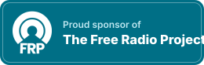

HomeFund a voice
Fund a voice
Every cause below is waiting for its radio ad. It takes $250 to write, record and air one. Give any amount, choose where it goes, and watch the meter move. When a meter fills, that ad goes on the air.
Preview mode. We are not collecting money yet, and the causes shown are examples. Nothing you enter here is charged or saved.
What happens after you give
Your account opens
Your gift creates a sponsor account that lists every cause you chose and how close each one is to airing.
The meter moves
Your money is held for the causes you picked. Big or small, every gift pushes a meter toward full.
The ad airs
When a cause reaches $250, we write the ad with them, record it and book the airtime.
You hear back
We email you when each ad goes on the air, with your sponsor badge and a report of the results.
You choose the causes, and we approve every script before it airs, so your name only ever sits beside an ad you would be proud of.
On the air now
The sponsor badge
Every sponsor gets this badge by email. Paste the code into your website and it links back to the causes you paid for.

<a href="https://freeradioproject.org/"><img src="https://freeradioproject.org/badge.svg" alt="Proud sponsor of The Free Radio Project" width="260" height="84"></a>